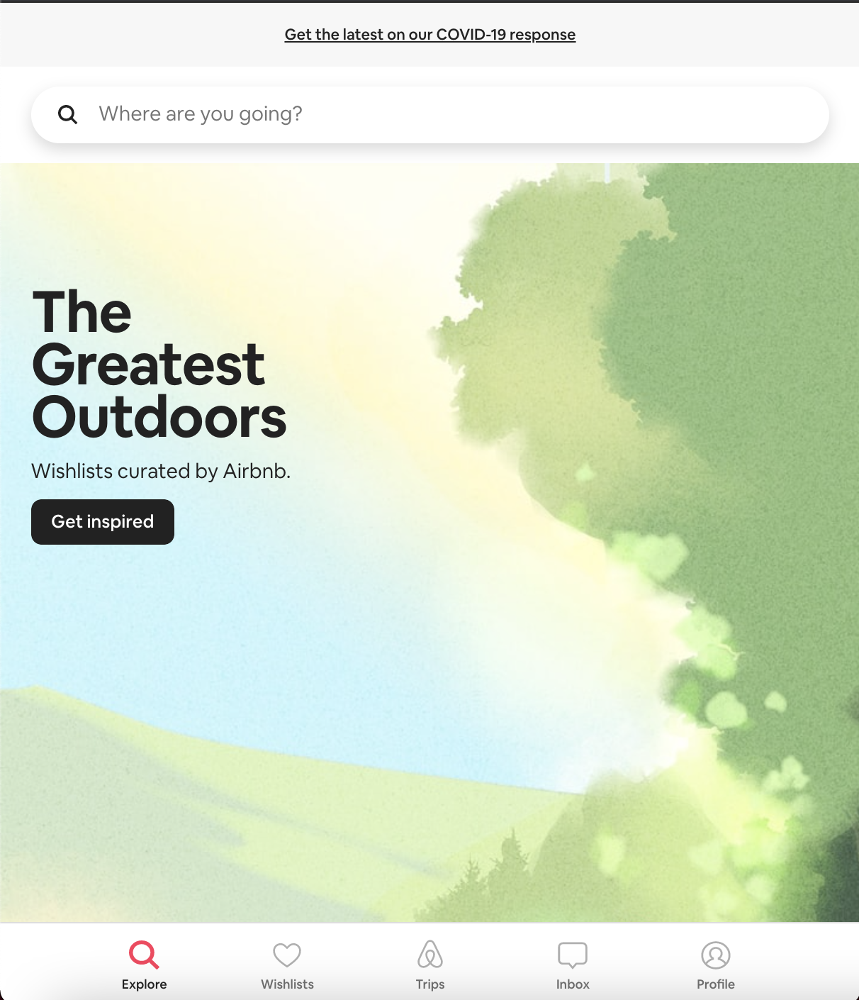

User Interface Survey
Your Input Makes the Difference
Leave Your
Thoughts
Comments
Feedback
Input
Mark
Opinion
Check the UI on
this
website!

What are your thoughts on the UI of
AirBnB's
website?
Do you like the overall UI design of Airbnb's website?
Yes
No
Which features have you NOT seen before in terms of that website's UI?
Combination of Colours
Hover Over Features
Mobile Native
Layout
Which feature in terms of the UI design, do you like the most?
Combination of Colours
Hover Over Features
Mobile Native
Layout
Font
What do you like the most in the UI design:
What do you dislike the most in the UI design:
Any additional feedback and/or comments:
SUBMIT